白帽子如何快速挖到人生的第一个漏洞 | 购物站点挖掘商城漏洞
本文针对人群：很多朋友们接触安全都是通过书籍；网上流传的PDF；亦或是通过论坛里的文章，但可能经过了这样一段时间的学习，了解了一些常见漏洞的原理之后，对于漏洞挖掘还不是很清楚，甚至不明白如何下手...
可能你通过 sql-labs 初步掌握了sql注入，亦或是你通过 upload-labs 初步掌握了文件上传，或者你通过 DVWA 的学习初步掌握了其他一些常见漏洞。
但是他们都有一个弊端是：你已经知道这个地方有漏洞，甚至你知道是什么类型的漏洞，你只要想办法利用这个漏洞就可以了
但是在进行漏洞挖掘的时候：你往往不知道哪个地方有漏洞，或者说你不知道这个地方可能存在什么漏洞
这个时候你可能需要看一下 乌云镜像站（大家可自行百度，谷歌）...通过一些前辈们的漏洞挖掘报告来了解一下：你所掌握的漏洞的常见触发点在哪，或者说一个网站哪些地方具有漏洞
因为挖掘 SRC 不仅需要收集全面的资产，而且很多网站都有各式各样的 waf ，对于刚接触漏洞挖掘的朋友们来说就不是那么友好，所以对于刚接触漏洞挖掘的朋友们来说，在挖掘 SRC 之前，很多人都是从 补天; 漏洞盒子; 先知 慢慢走过来的。
问：为什么要选择商城型网站的挖掘？
答：商城在日常的使用中比较普及（应该没有人没有用过淘宝吧...），功能点相对来说比较多，而且我们比较熟悉网站的功能点，一是不用去很麻烦的寻找网站的功能点，毕竟大家平常都要购物。二是商城的功能点相比于一些静态网站要多很多，因此可能产生的漏洞会相对较多，故而挖掘到漏洞的几率也会提升。
问：这样的网站从哪里找到呢？
答：站长之家，谷歌高级语法搜索

由于很多大佬往往在进行漏洞挖掘的过程中，都是凭借自己写的小工具，或者是直接凭借累积的经验对功能点进行定向的漏洞挖掘。这样的高效率漏洞挖掘显然不适合一些刚接触漏洞挖掘的朋友们，那么本文中我们就先抛开这些大佬们的工具。通过正常的购物流程来对商城进行漏洞挖掘，以大家日常的生活方式挖出漏洞。
因为一些特殊原因，本文就拿 淘宝 做例子来演示以购物流程来进行漏洞挖掘。本文涉及到的漏洞在淘宝中均不存在，但大家可以自行根据文章内容举一反三
登录过程
注册账号
啰嗦几句
在注册账号的时候，如果你不想因为你随手发出去的表单，而导致你的电话被打爆，可以使用一些在线接收短信的平台进行手机注册...（血和泪的教训)
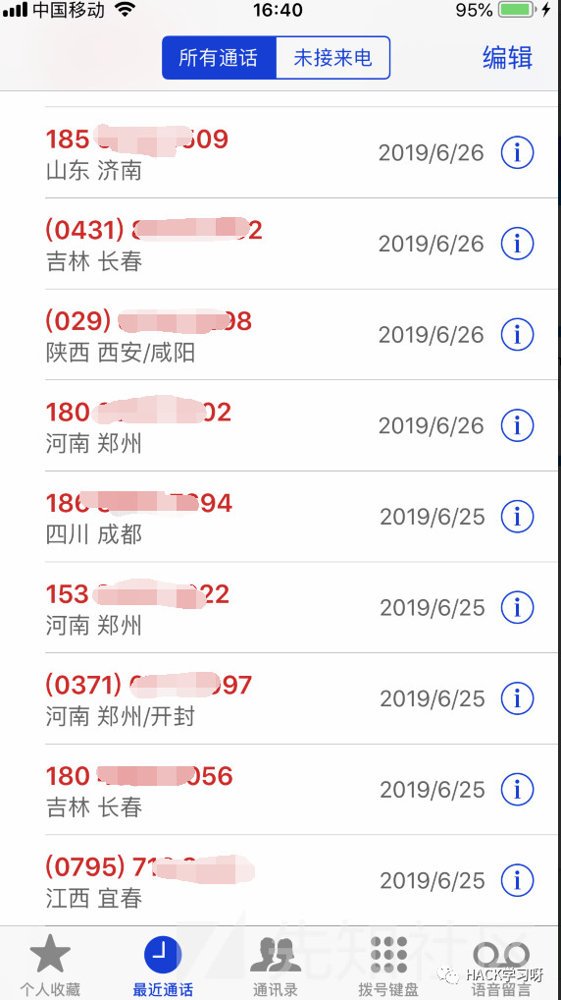
因此在这里提供以下几个常用的短信接码平台
免费接收短信
http://www.smszk.com/
Z-SMS
http://www.z-sms.com/
GetFreeSMSNumber
https://getfreesmsnumber.com/
Free Online Phone
https://www.freeonlinephone.org/
10分钟邮箱
http://mail.bccto.me/
临时邮箱、临时电子邮箱、24小时邮箱
http://24mail.chacuo.net/
短信轰炸
在进行用户注册时存在发送短信的界面。发现发送短信时不需要输入验证码才能发送，且不限制发送的验证码的次数，或发送验证码时存在绕过
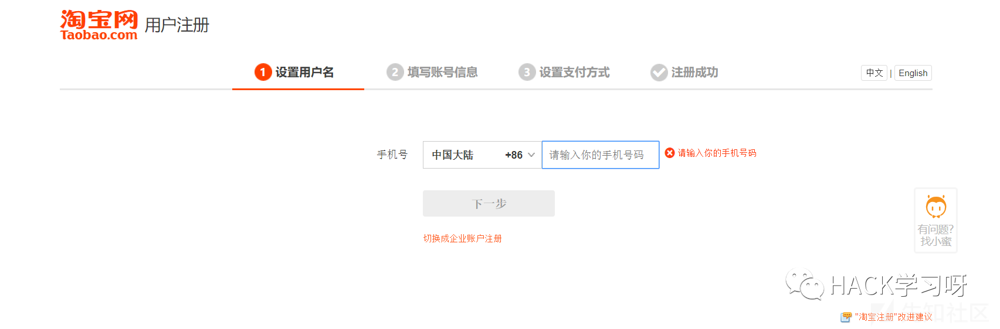
绕过姿势：
挖洞技巧：绕过短信&邮箱轰炸限制以及后续
https://www.anquanke.com/post/id/93878
可根据现有情景自行使用绕过姿势
任意用户注册
打开方式一
偶遇过一个上古网站，注册账户时，并没有对注册的账户的手机号或者邮箱做出限制
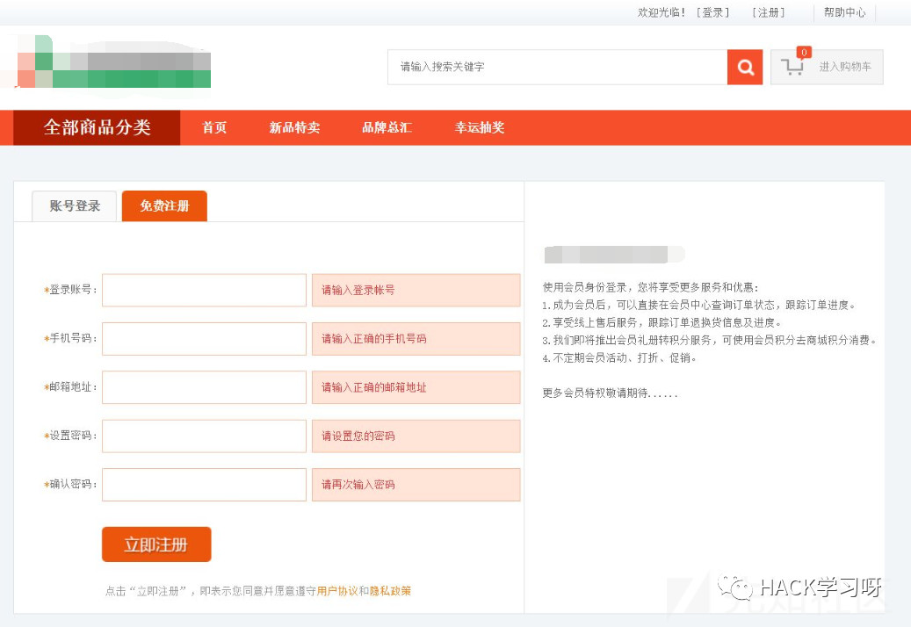
打开方式二
在进行用户注册的时候发送短信，抓包，发现包里直接有验证码
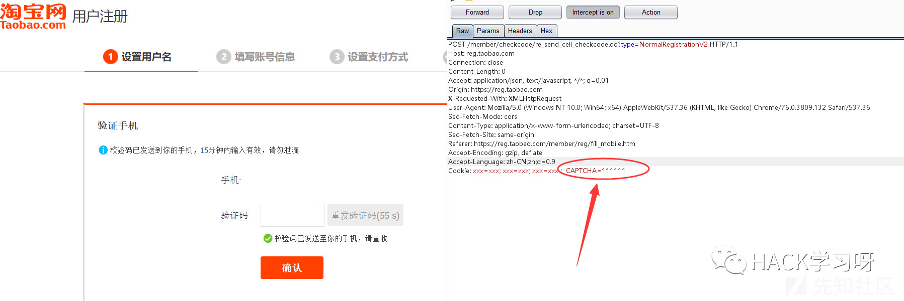
但是通常可能验证码会经过base64等编码手段进行编码，解码后也可直接获得验证码
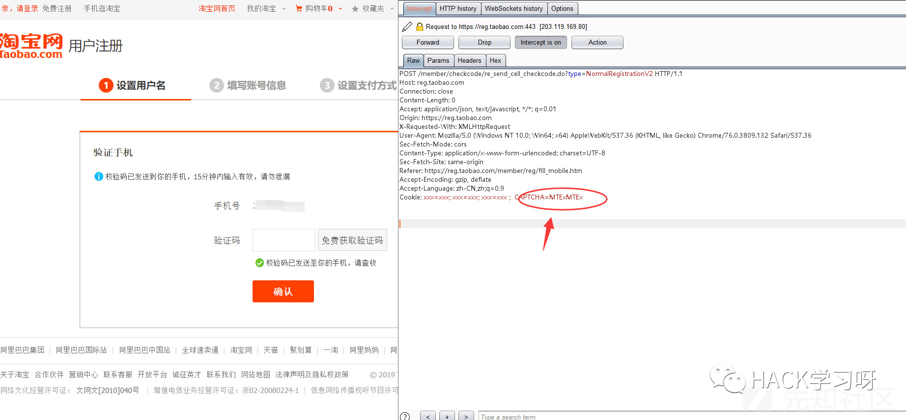
打开方式三
发现发送了一个验证码之后，后端没有限制输入错误的次数或者没有限制输入的时间
那么我们可以直接使用burpsuite里面的爆破模块进行爆破，可以直接爆破成功
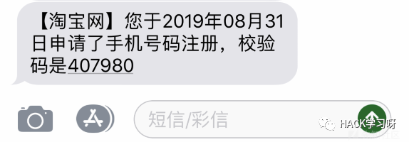
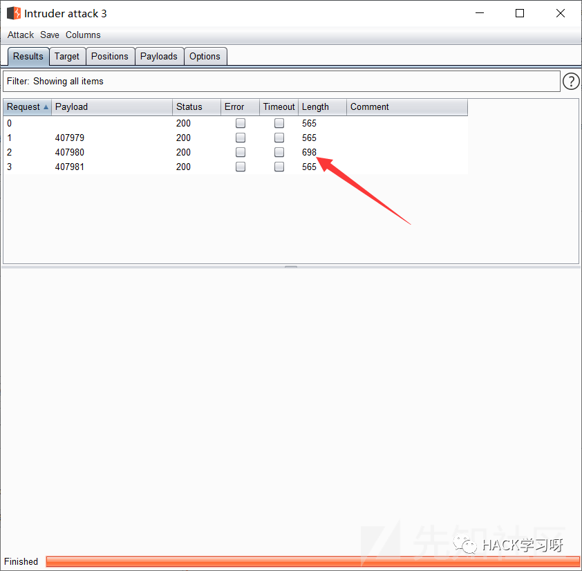
可根据现有情景自行使用绕过姿势
URL跳转
发现淘宝登陆界面的URL为https://login.taobao.com/member/login.jhtml?redirectURL=https%3A%2F%2Fwww.taobao.com
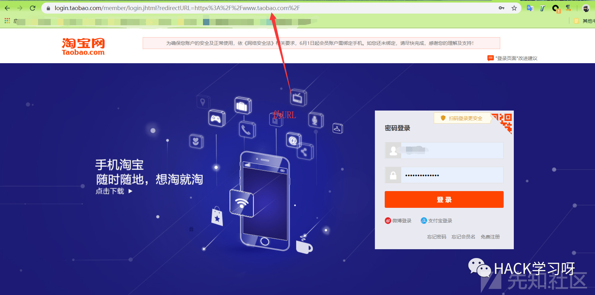
更改redirectURL参数后的值为你想恶意跳转到的URL,如： https://www.baidu.com/
登陆成功后可跳转到百度页面
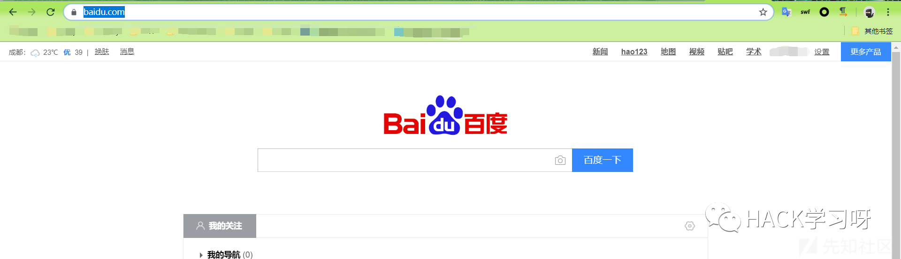
绕过姿势：
分享几个绕过URL跳转限制的思路
https://www.anquanke.com/post/id/94377
可根据现有情景自行使用绕过姿势
忘记密码
短信轰炸
参考注册账号时的短信轰炸
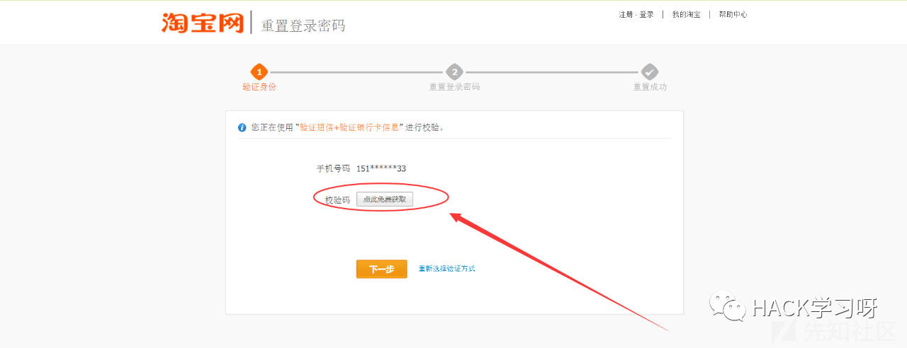
任意密码重置
参考任意用户注册进行验证码的Bypass
此外：还可以参考
任意用户密码重置的10种姿势
https://www.jianshu.com/p/f1dbd4482cc0
登录界面
暴力破解
经过对网站的测试，发现对登录次数失败没有限制，也没有验证码的限制，因此可以直接burpsuite跑大型字典，从而暴力破解账号密码
提供以下几个生成字典方式
Github上有很多收集好的字典
https://github.com/rootphantomer/Blasting_dictionary
更多的可以在Github上自行寻找可能你需要生成一些特殊定制的
在线生成地址一：https://www.itxueke.com/tools/pass/#
在线生成地址二：http://xingchen.pythonanywhere.com/index下面的py脚本你也可以尝试使用
pydictor下载地址：https://github.com/LandGrey/pydictor
使用指南：https://www.ddosi.com/b172/
somd5 提供的字典：
https://www.somd5.com/download/dict/
越权
越权是个比较抽象的东西，在这里因为篇幅的原因就不展开论述了
具体可以参考：
我的越权之道- 小川
https://wooyun.js.org/drops/%E6%88%91%E7%9A%84%E8%B6%8A%E6%9D%83%E4%B9%8B%E9%81%93.html
【技术分享】聊聊越权那些事儿
https://www.anquanke.com/post/id/84892
进入商城
反射型XSS
进入商城之后当然是挑选物品，因此在搜索框可能存在反射型xss
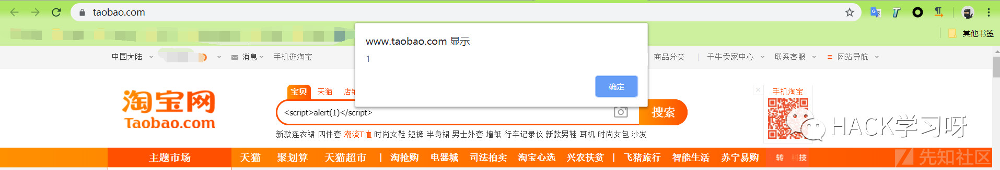
绕过姿势推荐：
五道口杀气 ——》 Bypass xss过滤的测试方法
https://wooyun.js.org/drops/Bypass%20xss%E8%BF%87%E6%BB%A4%E7%9A%84%E6%B5%8B%E8%AF%95%E6%96%B9%E6%B3%95.html
心伤的瘦子 ——》心伤的瘦子系列教程
https://shuimugan.com/bug/index?BugSearch%5Bbug_no%5D=&BugSearch%5Btitle%5D=&BugSearch%5Bvendor%5D=&BugSearch%5Bauthor%5D=%E5%BF%83%E4%BC%A4%E7%9A%84%E7%98%A6%E5%AD%90&BugSearch%5Bbug_type%5D=&BugSearch%5Bbug_level_by_whitehat%5D=&BugSearch%5Bbug_level_by_vendor%5D=&BugSearch%5Brank_by_whitehat%5D=&BugSearch%5Bbug_date%5D=&page=1
此外：测试 XSS 就不要放过每一个搜索框，有一些商城中经常被遗漏过滤的一些地方
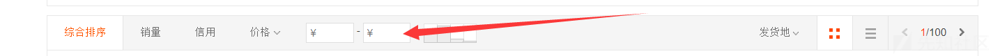
比如曾经我挖到某站点这类相对隐蔽的搜索框
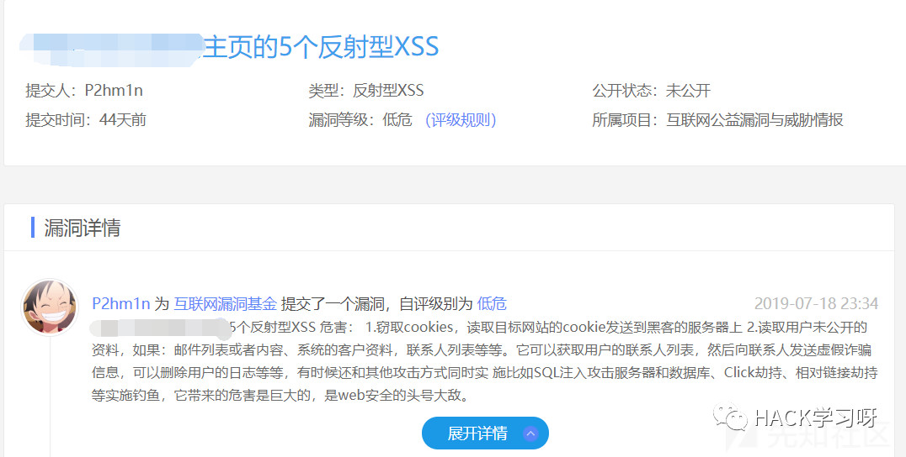
可根据现有情景自行使用绕过姿势
存储型 XSS
在个人资料处可能存在存储型 XSS
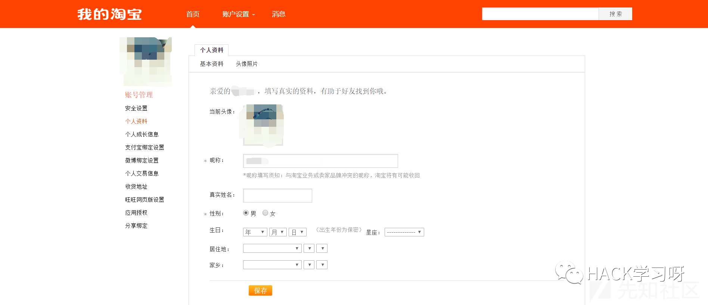
特别是在个人地址栏，因为可能手机信息要求必须是数字，邮箱格式必须是数字+字母，但是个人地址栏往往没有做出太多的过滤
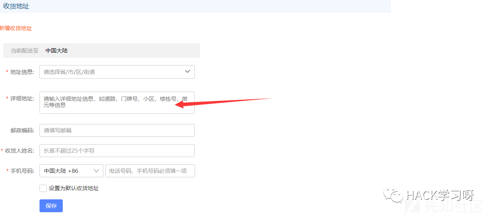
比如我曾在补天挖到关于个人地址栏的存储型XSS,都是几乎没有过滤的

CSRF
与XSS对应的，在商城内部同样可能存在 CSRF
但由于现在大多数网站都具备了 CSRF token ，且验证了 referer
CSRF的分析和利用在 DVWA 靶场已经从 Low，Mediun， High， Impossible 几种难度阐述了 CSRF 的分析和利用，已经很详细了,而且红日安全团队出的文章已经很详细了
[红日安全]Web安全Day3 - CSRF实战攻防
URL：https://xz.aliyun.com/t/6128
还有一些绕过姿势,如 Bypassing CSRF Protection
URL：https://medium.com/swlh/bypassing-csrf-protection-c9b217175ee
绕过CSRF防御<翻译文章>
https://xz.aliyun.com/t/6176
乌云漏洞库之CSRF
https://shuimugan.com/bug/index?BugSearch%5Bbug_no%5D=&BugSearch%5Btitle%5D=&BugSearch%5Bvendor%5D=&BugSearch%5Bauthor%5D=&BugSearch%5Bbug_type%5D=CSRF&BugSearch%5Bbug_level_by_whitehat%5D=&BugSearch%5Bbug_level_by_vendor%5D=&BugSearch%5Brank_by_whitehat%5D=&BugSearch%5Bbug_date%5D=&page=1
上传头像获得shell
这里没办法进行云演示了...
上传漏洞的小结可以参考我的博客 ——》
通过 Upload-labs 掌握文件上传漏洞
https://p2hm1n.github.io/2019/07/30/Upload-labs-Writeup/#more
同时推荐大家一个Google的插件——》Wappalyzer
Wappalyzer 是一款可以用来识别 WEB 网站所使用的建站程序以及使用了哪些相关技术的工具的谷歌浏览器扩展插件。看到好的网站可以通过 Wappalyzer 识别网站所用的所有技术，可以对网站搭建起到不错的参考作用。
利用上传漏洞时，根据相应的中间件漏洞组合，也可能能实现巧妙的绕过效果 ——》
Web中间件常见漏洞总结
https://www.freebuf.com/articles/web/192063.html
可能你的webshell会被杀掉？
这里推荐 Github上的一个项目 ——》
免杀webshell无限生成工具(利用随机异或无限免杀D盾)
https://github.com/yzddmr6/webshell-venom
购买物品
修改价格
表示自己曾经也能买得起面包机
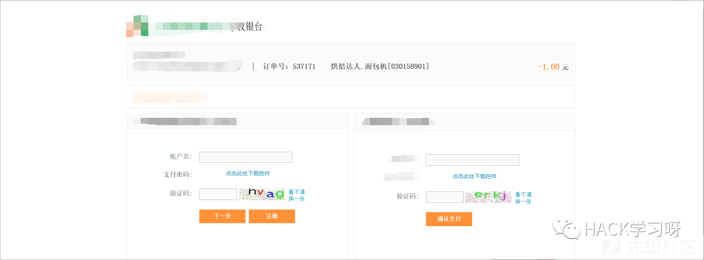
具体有几方面：第一是在购买产品过程中修改产品数量、价格；第二是在支付时修改总价格或者优惠价格；第三是直接修改充值价格
直接修改充值价格的极其罕见，这里给出乌云的一个案例 ——》
顺丰宝业务逻辑漏洞
https://shuimugan.com/bug/view?bug_no=2272
由于这个漏洞比较罕见，所以这里补充一些乌云案例供大家参考 ——》
乌云案例-支付逻辑漏洞
http://www.anquan.us/search?keywords=%E6%94%AF%E4%BB%98%E9%80%BB%E8%BE%91%E6%BC%8F%E6%B4%9E&content_search_by=by_bugs
存储型 XSS
问：不是之前已经写过个人资料处的存储型 XSS 吗，为什么这里还要再写一遍？
答：可能有的网站注意过这个问题，在个人资料那个入口已经做出了过滤，但是在购买物品时添加的地址的确没有做出过滤
比如曾经在对某网站测试的时候，发现个人信息的地址栏对输入的payload做出了过滤，但是在购买物品重新添加地址的时候，代码没有对其做出过滤，因此导致了存储型 XSS
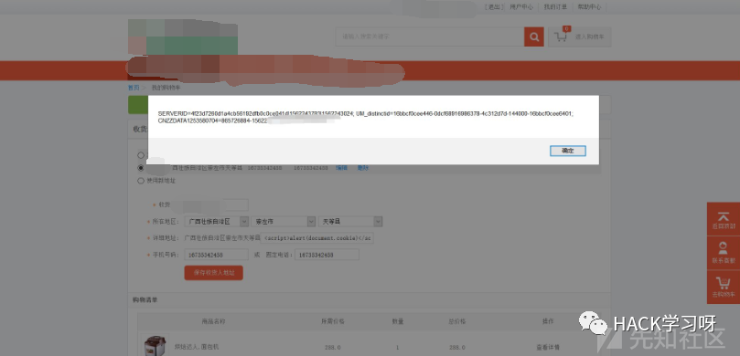
SQL注入
之所以把sql注入给单独列出来，是因为sql注入的触发点真的太多了， 增 删 改 查，一切与数据库交互的地方都有可能进行sql注入。从注册账号，到购买物品的完成。每一个GET，POST的参数都可能存在sql注入，所以大家测试的时候需要足够的耐心和细心。我曾经就有只单独对我认为在网页上有回显的参数进行测试的坏习惯，因此遗漏了挺多测试的点，所以希望大家不要toulan的忽略掉一些参数。
关于sql注入的篇幅也是巨大的，针对不同数据库的特性绕过方式也是千奇百怪，这里也不详细展开论述了
博客里写了一些sql注入的payload和一些常见绕过
SQL注入一把梭
https://p2hm1n.github.io/2019/06/07/SQL%E6%B3%A8%E5%85%A5%E4%B8%80%E6%8A%8A%E6%A2%AD/#more
写在最后
问：商城就只有这些漏洞吗？
答：当然不是的，可能的还有很多很多，本文仅购物流程一个思路进行漏洞挖掘，只给那些练习完靶场，但是不知道如何对一个网站下手的朋友们提供一个小思路。可以进行延伸的方面也还有很多。
问：为什么你的漏洞都没有绕过？
答：绕过需要看当时的过滤以及当时的条件，环境等，所以由于篇幅的原因没有展开论述，本文意在提供思路进行挖掘，但在每个漏洞下面都提供了一些bypass不错的思路的文章链接
本文只以购买物品整个流程一个思路来进行漏洞的挖掘，只是片面的，可以进行漏洞挖掘的面还很广，挖掘思路也很多。只是根据人们日常生活操作来挖掘漏洞比较的通俗易懂，也好入手，很适合漏洞挖掘的新手挖洞。在进行购物流程中，文中有没有提到的欢迎各位师傅补充，有好的思路也请师傅们不吝赐教，有不足之处也望批评指正。
本文仅限技术研究与讨论，严禁用于非法用途，否则产生的一切后果自行承担。
刚刚入门的小伙伴可以多看看乌云镜像库
方便的话用下面这个Github项目把虚拟机镜像下载到本地，本地还原乌云镜像站
然后学习各种漏洞的挖掘实际案例，学习师傅们的思路和手法
https://github.com/hanc00l/wooyun_public

来源：先知社区
作者：P2hm1n
如有侵权，请联系删除